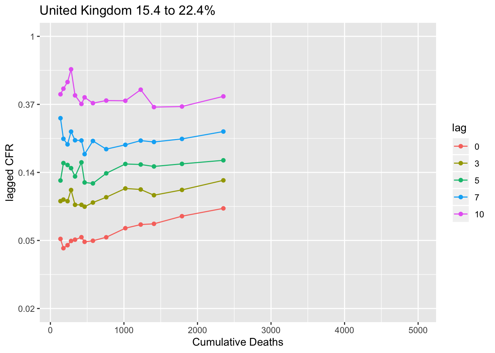
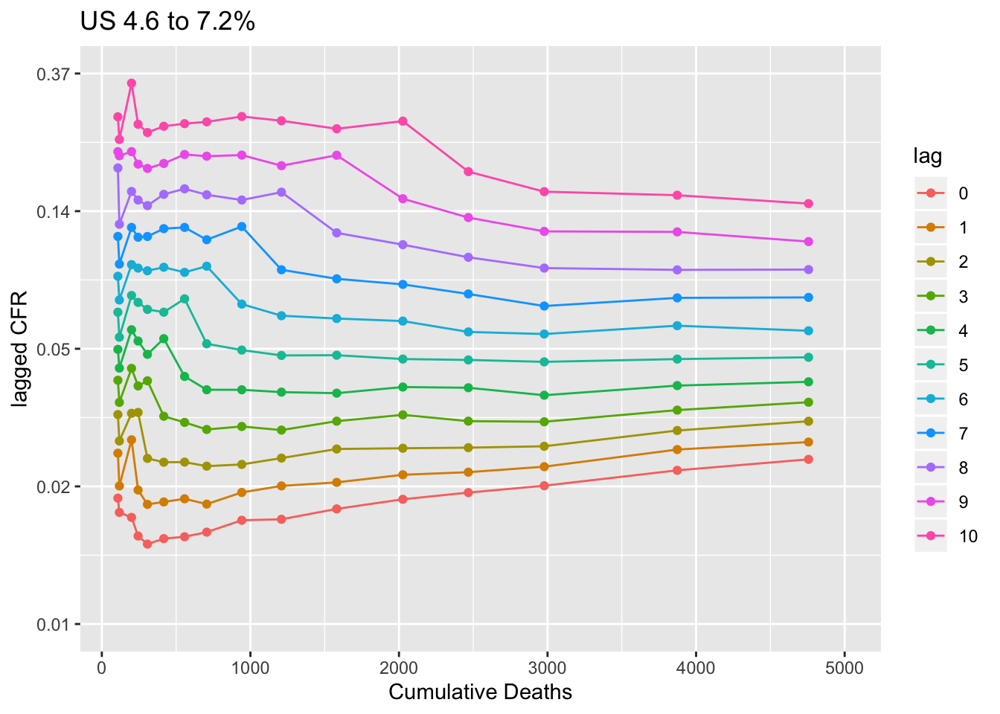
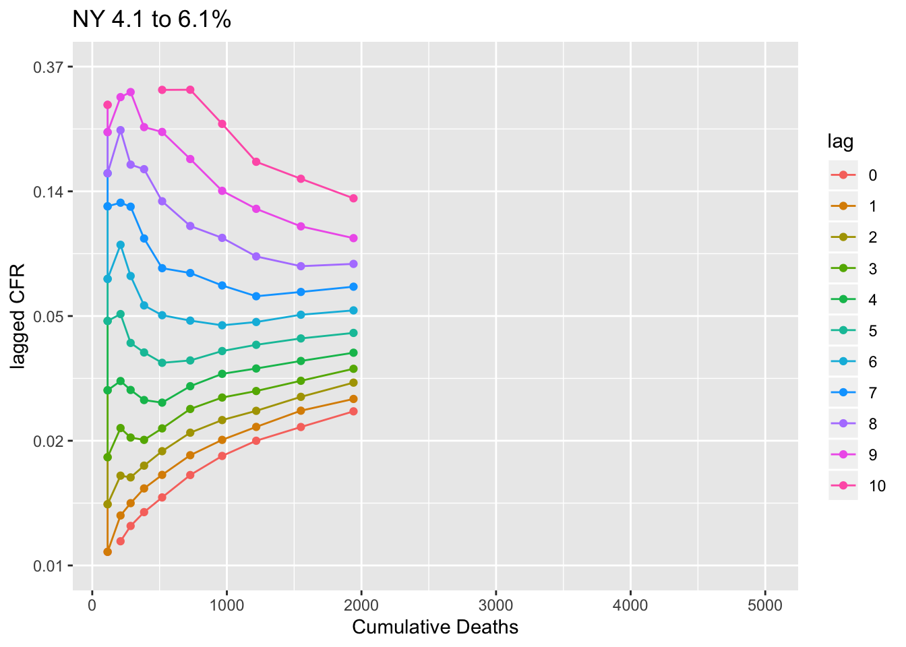
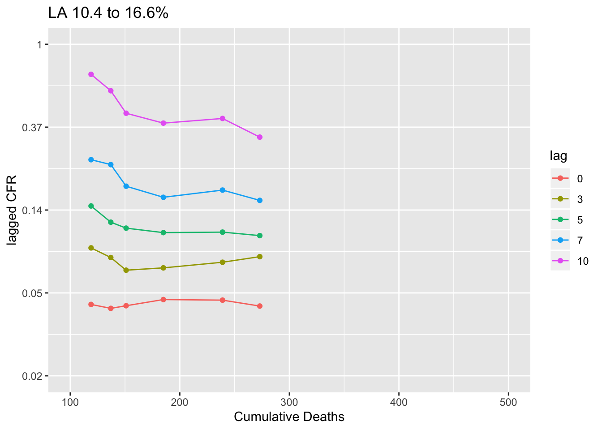

CFR
The case fatality rate (CFR) is the fraction of deaths relative to the positive cases (reported positive by health officials). Once the epidemic is over, the CFR is (cumulative number of death)/(cumulative number of cases). But during the epidemic, just dividing the cumulative deaths by cumulative cases will greatly under estimate the CFR because there is a delay between the positive test and death.
Instead while the epidemic is spreading, we want to compare cumulative deaths today against the cumulative cases some days prior. But what lag (days prior) to use? We can get a handle on this by looking at Italy.
The plot shows the cumulative deaths against the lagged CFR. If the lag is right, the line should be flat. Lag 0 is just cumulative deaths today divided by cumulative cases. We can see that goes up with time. The cases were slowing and the deaths were catching up so to speak. So this illustrates the problem with using lag 0. Lag 10 (ten days prior) is too long. The ratio of cumulative deaths to cumulative cases 10 days prior goes down as the case curve bends (flattens). Somewhere lag 5 to 7 is about right. The lagged CFR plot flattens somewhere in that lag.
So that suggests that the CFR in Lombardia is about 20% (the level of the lag 5 line) to 23% (the level of the lag 7 line). Note this is not the infection fatality rate. Like many places that are overwhelmed, testing is focused on those who show up at the hospital in distress. The hospitalization rate is about 40% in Lombardia, suggesting that they really focus the testing on the worst cases. Also the Italy has an older population.

Other countries
Let’s look at other countries. Remember the CFR depends a lot on how the country does testing. Test even people who aren’t that sick (or who are even asymptomatic) and the CFR is lower. Test only those who need to be hospitalized, and the CFR will be higher. This calculation requires a fair number of deaths to compute. I’ve set the minumum at 100. The estimate of the CFR at lag 5 and 7 for the last 4 values is shown in the title.
The CFRs (lag 5 to 7 days) in Europe are ca 15-21% across all the countries with over 1000 fatalities.



US CFR
The flattening lags for the US is about the same, 5 to 7 days prior. But look at the lagged CFR (lag 5 to 7). It is much lower than in Europe.

The US numbers are the sum across very diverse states, each of which is handling reporting at different levels and which have different testing levels. You can see that the lines don’t stabilize until deaths are pretty high, about 1000. So we can only do this for NY. CFR in NY looks to be about 5% too.
It looks to me that NY is flattening out at a little longer lag, 6-8 not 5-7. But why is the US (and NY) so low relative to Europe? The little data available for WA and CA, by the way, points to a similar 5-6% CFR. Is NY under-reporting deaths (delays)? It is possible that the reporting system is overwhelmed but that is not the case in WA and CA. WA recently had delays in reporting but did report numbers, albeit a few days late.
This low CFR is very odd. It is hard to imagine that the US is doing more testing than Europe. Although it is the case that NY has really ramped up testing. Unfortunately without good hospitalization rates, it’s hard to know if NY is testing people who are less sick than European countries are.

The exception to this is Louisiana which has much higher death rate.
